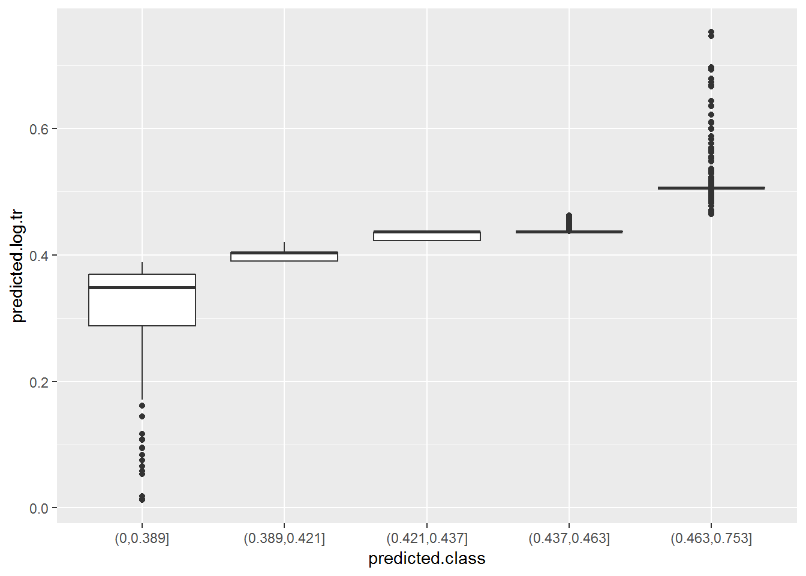

4 Step 2: Non-response weights
4.1 What are of non-response weights?
The second basic step in weighting a survey is accounting for differences in the propensity to respond. Imagine a situation in which a profile of sampled units (e.g. lower income people) had higher propensity to respond than another profile (e.g. people with higher incomes). Imagine as well that the characteristics of both profiles were associated to our ‘Y’ variables, here alcohol and cigarretes consumption (e.g. people with lower income smoking and drinking more than people with higher income). As we then would have a larger proportion of lower income/smokers in our sampleour analyses would be biased.
If we compute the sample ourselves, we can also compute the probability of a unit of being sampled. Computing the probability of replying to the survey is, however, slightly more challenging. We can not direclty observe the probability of a unit of replying to the survey, therefore we need to estimate it. This is done using information which we know for both respondent and non-respondent units. Here it is useful to think about the probability of response as a latent variable (i.e. not directly observable).
There are two main ways of using this information. The first one would be creating cells from variable intersections (i.e. sampled units 15-24 & countryside; 15-24 & cities; 25-34 & countryside, etc.) and then calculate the probability of response in each cell. The second method is to estimate the probability of response by modelling it.
The first approach has the advantage of being more simple. However, computing a large number of cells from crossing variable could most probably lead to having empty cells or cells with a very small number of sampled units. The probability estimated for these cells with smaller number of units could be far from the real one. We could apply it if we thought that the probability of responding can actually be explained by the variable intersections we used.
The second approach (explained in ‘Propensity adjustment’ section below) relies on the modelling skills of the researcher computing the weights. In order to estimate the proability of response we need to predict it. ‘Predictive modelling’ is slightly different than the usual ‘inference modelling’. Here we are not interested in understanding the causes of differences in response propensities. We are just interested in predicting these. Therefore, we should take a ‘data driven’ approach that differs from those we usually see in social sciences. For an excellent introduction to ‘predictive statistics’ you can check the free book ‘An Introduction to Statistical Learning’ by James et al..
This is not a guide on ‘predictive modelling’. However, it might be worth it to very briefly explain the basic principle behind it. We should try to build a model which is able to estimate the probability using only ‘relevant’ information and excluding ‘noise’ from the model. Therefore, a predictive model should be fitting the observed data well enough but at the same time not too specific to it.
For this specific case of non-response weighting, we are especially interested in using propensity predictors which are related to both the response propensity and our dependent variables.
Here we will use the paradata information to model the probability of response. The variables describing the type of house and the immediate vicinity around houses have a relatively small number of missing values (~ 8%) these missings seem to be related (i.e. all variables missing for certain units). Those sampled units that have missing values on all these paradata variables are always non-respondents. It would be useful to know why this pattern exists. We would guess that these are sampled units which interviewers could not reach for some reason. For this analysis, we will ignore this fact and not use these units with missing values in ALL paradata variables. This should only result in a linear transformation of the estimated probabilities of response. Moreover, we can later adjust our model to ‘undo’ this transformation.
data.nonresponse.model <- data[vars.paradata] %>% select(idno, interva, type:vandaa)
data.nonresponse.model$all.missing <- NA
data.nonresponse.model$all.missing[is.na(data.nonresponse.model$type) &
is.na(data.nonresponse.model$access) &
is.na(data.nonresponse.model$physa) &
is.na(data.nonresponse.model$littera) &
is.na(data.nonresponse.model$vandaa)] <- 1
data.nonresponse.model %<>%
filter(is.na(all.missing)) %>%
select(-all.missing)
indep.vars.nonresponse <- c("type", "access", "physa", "littera", "vandaa")
data.nonresponse.model[,c("type", "access")] %<>% map(function(x){as.character(x)})
#data.nonresponse.model %>% map(function(x){sum(is.na(x))})
# Missing category for missings in multinomial variables.
for(i in c("type", "access")) {
data.nonresponse.model[[i]][is.na(data.nonresponse.model[[i]])] <- "Missing"
}
# Mean imputation for ordinal variables.
for(i in c("physa", "littera", "vandaa")) {
data.nonresponse.model[[i]][is.na(data.nonresponse.model[[i]])] <- levels(data.nonresponse.model[[i]])[median(data.nonresponse.model[[i]] %>% as.numeric(), na.rm = T) ]
}
for(i in c("physa", "littera", "vandaa")) {
data.nonresponse.model[[i]] <- as.ordered(data.nonresponse.model[[i]])
}
data.nonresponse.model %<>%
mutate(response = as.numeric(as.numeric(interva) == 1))
data %<>%
mutate(response = as.numeric(as.numeric(interva) == 1))4.2 Estimating response propensities using logistic regression
Valliant et al (2013) recommend estimating the response propensities and then grouping them in classes. The grouping step should avoid extreme weights. One way of estimating the response propensities is using logistic regression. This logistic regression should be unweighted. Later in this section we will try other ways of computing estimates of response propensities.
In order to do a logistic regression in R, we need to specify the dependent variable (response) and predictors (type, access, physa, littera and vandaa) in a formula. Then we input the formula and the dataset into the ‘glm’ function with a ‘family = binomial’ argument.
The following output shows the first six estimated response propensities of our dataset.
formula <- as.formula("response ~ type + access + physa + littera + vandaa")
options(na.action = 'na.pass')
x.matrix <- model.matrix(formula, data = data.nonresponse.model)[, -1]
log.reg.m <- glm(formula,
data = data.nonresponse.model,
family = "binomial")
coef.response.log <- coef(log.reg.m)
predicted.log <- log.reg.m$fitted.values
data.nonresponse.model$predicted.log <- predicted.log
predicted.log %>% head()## 1 2 3 4 5 6
## 0.4101303 0.4586384 0.4675598 0.5551654 0.4117369 0.5143249As explained before, we are now computing our estimates from a subset of sampled units. This does not take into account many non-respondents which had missing values in all predictors of our non-response model. This means that the previous propensities are slightly overestimated. This is because the response rate in our full dataset is 40.4% and in our subset used for non-response adjustment is 44.1%. This is not entirely related to non-response weight adjustment so we will just compute the new estimates with modified intercept in the next chunk and skip the explanation on how to perform the trasformation. For an excellent description on how it’s done readers can check Stanford University’s online course on SP Statistical Learning.
Below the next chunk of code you can see the first six transformed estimated response propensities of our dataset.
resp.pop <- mean(data$response)
resp.subgroup <- mean(data.nonresponse.model$response)
log.reg.m$coefficients[1] <- coef(log.reg.m)[[1]] + log(resp.pop/(1-resp.pop) - log(resp.subgroup/(1-resp.subgroup)) )
rm(resp.pop, resp.subgroup)
predicted.log.tr <- predict(log.reg.m, data.nonresponse.model, type = "response")
data.nonresponse.model$predicted.log.tr <- predicted.log.tr
predicted.log.tr %>% head()## 1 2 3 4 5 6
## 0.3886949 0.4365441 0.4453892 0.5329992 0.3902731 0.4919858rm(coef.response.log, formula, i)4.3 Creating non-response adjustment classes
Here we will follow the procedure for creating classes explained in pag. 329 of Valliant et al.(2013). From their text it is not so clear how many classes should be created.
Looking at the distribution of estimated probabilities of response, we observe a large majority of values between 0.4 and 0.5. However, there are several outliers at both ends of the distribution.
As there is not so much dispersion in values in the middle of the distribution, creating classess accoring to quintiles might not be the best way to account for differences in estimated response propensities. However, other methods might create classess which are too specific to outliers. This is kind of a bias-variance trade off. If we fit broad classes which encompass very different estimated probabilities within them, we will be adjusting less and so keeping more bias in our estiamtes. If we create tight classes capturing these outliers, then we will have large differences in weights and so more variance in our estimates.
predicted.log.tr %>% quantile(probs = seq(0,1,0.05)) %>% round(4)## 0% 5% 10% 15% 20% 25% 30% 35% 40% 45%
## 0.0124 0.2878 0.3457 0.3638 0.3887 0.3903 0.4022 0.4038 0.4211 0.4227
## 50% 55% 60% 65% 70% 75% 80% 85% 90% 95%
## 0.4227 0.4365 0.4365 0.4365 0.4370 0.4370 0.4626 0.5061 0.5065 0.5065
## 100%
## 0.7526These are the 5 classes created using 20th, 40th, 60th and 80th quintiles.
data.nonresponse.model$predicted.class <- cut(x = data.nonresponse.model$predicted.log.tr, breaks = c(0,quantile(predicted.log.tr, probs = seq(0,1,0.2))[-1] ))
data.nonresponse.model$predicted.class %>% levels()## [1] "(0,0.389]" "(0.389,0.421]" "(0.421,0.437]" "(0.437,0.463]"
## [5] "(0.463,0.753]"Below there is a summary of the estimated propensities included in each of them (in boxplots). We can see that the first and last groups have more dispersion in propensities. The middle three groups have very little dispersion and are similar between them. In this case they are so similar that we could even consider merging them into one single group.
ggplot(data.nonresponse.model, aes(x = predicted.class, y = predicted.log.tr)) +
geom_boxplot()
To compute the non-response weights, we can use the mean estimated probability of response in each class.
data.nonresponse.model %>%
group_by(predicted.class) %>%
summarise(mean.prob = mean(predicted.log.tr) %>% round(4))## # A tibble: 5 x 2
## predicted.class mean.prob
## <fctr> <dbl>
## 1 (0,0.389] 0.3283
## 2 (0.389,0.421] 0.4016
## 3 (0.421,0.437] 0.4310
## 4 (0.437,0.463] 0.4387
## 5 (0.463,0.753] 0.5145And then we can compute the non-response weight as the inverse of the mean probabilities in each class.
data.nonresponse.model %<>% left_join(
data.nonresponse.model %>%
group_by(predicted.class) %>%
summarise(mean.prob = mean(predicted.log.tr) ), by = "predicted.class")
data.nonresponse.model %<>%
mutate(nonresp.weight = round(1/mean.prob, 4) )
data.nonresponse.model$nonresp.weight %>% unique %>% sort## [1] 1.9435 2.2793 2.3201 2.4900 3.04634.4 Testing non-response adjustment classes
After creating the classes, a good practice would be to check for covariate balance. This procedure is explained in pag. 330 of Valliant et al.(2013). Units in the same class should have similar values in covariates. At the same time, we would ideally find differencess between classes. In other words, here we would check if classes are made of homogeneous units (within-class check) and if they really distinguish different profiles of these (between-class check). For the within-group check, we are especially interested in checking if profiles of respondents and non-respondents within each class are similar.
The best way of doing this analysis might be fitting two different regressions for each covariate3. As an example we will do the balance analysis for the ordinal covariate physa. In a real analysis this should be repeated for all covariates.
For the between-class check, we can fit a model only with class predictors. This should show if classes explain differences in covariate variables. As we have an ordinal covariate (physa) with four categories (‘Very bad’, ‘Bad’, ‘Satisfactory’, ‘Good’, ‘Very good’), we will use an ordered logistic regression. An alternative would be to treat the covariate as a continous varaible and use an OLS regression.
The variable physa compares the ‘Overall physical condition building/house’. The variable is negativelly coded so larger values mean worse physical condition. The coefficients of the ordered logistic regression show that the larger the estimated propensity, the smaller the probability of being in bad physical conditions. Therefore, people in houses with worse physical conditions would have smaller response propensity and so be underrepresented in our sample. From the coefficients below we see that the classes we have created for non-response adjustment somehow explain differences in our analysed covariate. However, ideally we would have a more clear effect of classes on our covariate. We see that the second adjustment class created (that for estimated propensities between 0.41 and 0.443) actually has larger probabilities of having worse physical conditions than the base category (0 to 0.41). At the same time, the third and fourth categories (0.443 to 0.459) and (0.459 to 0.485) have very similar coefficients, which might indicate that they do not really distinguish different classes of sampled units.
formula. <- as.formula("physa ~ predicted.class")
test.between.model <- polr(formula = formula., data = data.nonresponse.model, method = "logistic")
ctable.between <- coef(summary(test.between.model))
p <- pnorm(abs(ctable.between[, "t value"]), lower.tail = FALSE) %>% round(4)
ctable.between <- cbind(ctable.between, "p value" = p)
ctable.between## Value Std. Error t value p value
## predicted.class(0.389,0.421] 0.4616699 0.08909791 5.181602 0
## predicted.class(0.421,0.437] -3.0018358 0.10543331 -28.471419 0
## predicted.class(0.437,0.463] -2.8379051 0.12184972 -23.290207 0
## predicted.class(0.463,0.753] -7.1107000 0.14993912 -47.423915 0
## Very good|Good -5.1316957 0.11232331 -45.686826 0
## Good|Satisfactory -0.6246051 0.06405379 -9.751260 0
## Satisfactory|Bad 2.5006755 0.08826855 28.330310 0
## Bad|Very bad 4.6467655 0.20292616 22.898799 0For the within-class check, we can extend our model to include interactions between class and response. This will check if, within a non-response class, there are differences between respondents and non-respondents in our covariate physa (ideally they wouldn’t be and we would not find them).
In this second test (see coefficients below) we see that one of the interactions has a significant coefficient at 5% confidence level. Ideally, all interaction terms would be non-significant, meaning that we do not observe within-group differences between respondents and non-respondents in our covariates. A way of dealing with this situation with one significant coefficient would be to explore other ways of spliting units into classes. However, as explained before, these other categorisations would have drawbacks in terms of inflated variance. Moreover, if we have a large number of classes and covariates, we would expect to find significant coefficients just by chance. Therefore, as long as these unbalances do not occur for most classes and covariates, reporting these unbalances should be enough. In this example, we see that the differences in the physical condition of their houses we observe within each computed class respondents and non-respondents are so small that might be due to sampling error4.
formula. <- as.formula("physa ~ response + predicted.class + response * predicted.class")
test.within.model <- polr(formula = formula., data = data.nonresponse.model, method = "logistic")
ctable.within <- coef(summary(test.within.model))
p <- pnorm(abs(ctable.within[, "t value"]), lower.tail = FALSE) %>% round(4)
ctable.within <- cbind(ctable.within, "p value" = p)
ctable.within## Value Std. Error t value
## response 0.16629093 0.12952169 1.28388484
## predicted.class(0.389,0.421] 0.59606463 0.11503347 5.18166279
## predicted.class(0.421,0.437] -2.93757529 0.12899719 -22.77239763
## predicted.class(0.437,0.463] -2.70924911 0.15584853 -17.38386062
## predicted.class(0.463,0.753] -7.13945161 0.19426167 -36.75172547
## response:predicted.class(0.389,0.421] -0.34119548 0.18198801 -1.87482398
## response:predicted.class(0.421,0.437] -0.18968461 0.18651462 -1.01699595
## response:predicted.class(0.437,0.463] -0.32814861 0.22822726 -1.43781515
## response:predicted.class(0.463,0.753] -0.02271575 0.23907967 -0.09501331
## Very good|Good -5.07916071 0.12147163 -41.81355457
## Good|Satisfactory -0.56711343 0.07902913 -7.17600521
## Satisfactory|Bad 2.56185632 0.10036301 25.52590104
## Bad|Very bad 4.70784119 0.20850649 22.57887082
## p value
## response 0.0996
## predicted.class(0.389,0.421] 0.0000
## predicted.class(0.421,0.437] 0.0000
## predicted.class(0.437,0.463] 0.0000
## predicted.class(0.463,0.753] 0.0000
## response:predicted.class(0.389,0.421] 0.0304
## response:predicted.class(0.421,0.437] 0.1546
## response:predicted.class(0.437,0.463] 0.0752
## response:predicted.class(0.463,0.753] 0.4622
## Very good|Good 0.0000
## Good|Satisfactory 0.0000
## Satisfactory|Bad 0.0000
## Bad|Very bad 0.0000rm(formula., test.within.model, p, indep.vars.nonresponse, i, test.between.model,
ctable.between, ctable.within)4.5 Propensity adjustment (alternative to adjustment classes)
An alternative to computing class adjustments is to directly use the inverse of the estimated probabilities of response. Adjustment classes act are a way of ‘smoothing’ predictions, avoiding extreme values and overfit. Therefore, they are based on some kind of ‘mistrust’ of statistical models. Even if they are a standard procedure in survey methodology and backed by solid literature, they might look a bit naive to researchers coming from other areas (e.g. econometrics, genomics, etc.). Adjusting directly with propensity scores relies more on statistical/modelling skills of researchers. Here we will show a couple of alternative methods. As previously explained, these need to avoid being too specific to our data. Instead, they should try to give information on the distribution that generated this data.
4.5.1 Estimating response propensities using Cross-validated LASSO Regression
The first method we will try is a penalised regression, more specifically a LASSO regression. Penalised regressions are very similar to a logistic regression but have the particularity of having ‘shrinked’ coefficients. This reduces the influence of predictors to avoid overfit. It does this by producing a model which would be better to predict ‘unseen’ data and is less specific to our data. In other words, it tries to avoid noise from our data set into the model. This is done by tunning the penalty parameters with cross-validation (a resampling method).
The first six estimated propensities are the output of the next code chunk.
formula. <- as.formula("response ~ type + access + physa + littera + vandaa")
options(na.action = 'na.pass')
x.matrix <- model.matrix(formula., data = data.nonresponse.model)[, -1]
glm.cv.model <- cv.glmnet(x.matrix, data.nonresponse.model$response, alpha = 1, family="binomial")
predicted.lasso <- predict(glm.cv.model, x.matrix, s = "lambda.min", type = "response")[,1]
data.nonresponse.model$predicted.lasso <- predicted.lasso
head(predicted.lasso)## 1 2 3 4 5 6
## 0.4087345 0.4611603 0.4523603 0.4758645 0.4198371 0.5135011Comparing the predictions obtained with these two methods (logistic regression and cross-validated lasso) we observe that they all give relatively similar values. They are all centered around the same mean, which is the proportion of respondents in our subset. Lasso regression is the more ‘rigid’ with a smaller standard deviation in its predictions. Logistic regression is almost always slightly more distant of the mean than the lasso regression. It is important to note that our logistic and lasso regressions included only linear parameters (i.e. no squared coefficients nor interactions). Therefore, these were both rather ‘rigid’ methods. Below we will see that our prediction of response probabilities is relatively poor. This is most probably because our covariates are far from excellent predictors of response propensities5. Therefore, it might not be worth the time to try more ‘flexible’ models.
mean(data.nonresponse.model$response)## [1] 0.4414344list.comparison <- list()
list.comparison$head.predicted.vals <- cbind(predicted.log, predicted.lasso) %>% head(10)
list.comparison$means <- c(mean.log.reg = mean(predicted.log),
mean.lasso = mean(predicted.lasso))
list.comparison$sd <- c(sd.log.reg = sd(predicted.log),
sd.lasso = sd(predicted.lasso))
list.comparison## $head.predicted.vals
## predicted.log predicted.lasso
## 1 0.4101303 0.4087345
## 2 0.4586384 0.4611603
## 3 0.4675598 0.4523603
## 4 0.5551654 0.4758645
## 5 0.4117369 0.4198371
## 6 0.5143249 0.5135011
## 7 0.4259045 0.4268628
## 8 0.4446954 0.4540173
## 9 0.3908374 0.4105130
## 10 0.4254382 0.4268628
##
## $means
## mean.log.reg mean.lasso
## 0.4414344 0.4414344
##
## $sd
## sd.log.reg sd.lasso
## 0.07217839 0.05818359rm(list.comparison)Comparing the fit of both models (below the next chunk), we see that the logistic regression fits a bit better to the whole sample, with 57.6% of success in classifying sample units as respondents vs non-respondents. However, the difference is almost negligible. Moreover, a 58% success in classifying is a rather poor model (by chance we would already expect to correctly classify 50%).
data.nonresponse.model %<>%
mutate(predicted.category.log.reg = (predicted.log > 0.5) %>% as.numeric,
predicted.category.lasso = (predicted.lasso > 0.5) %>% as.numeric)
train.correct.logreg <- table(data.nonresponse.model$response, data.nonresponse.model$predicted.category.log.reg) %>% diag() %>% sum()/nrow(data.nonresponse.model)
train.correct.lasso <- table(data.nonresponse.model$response, data.nonresponse.model$predicted.category.lasso) %>% diag() %>% sum()/nrow(data.nonresponse.model)
c(train.correct.logreg = train.correct.logreg, train.correct.lasso = train.correct.lasso)## train.correct.logreg train.correct.lasso
## 0.5755213 0.5737673The two chunks below compute the cross-validated ratio of correctly classified units. We would expect these to be lower than the successfuly classified units for the whole sample. This is because cross-validation is a resampling method. We use it to get an idea of how our estimates (e.g. ratio of correctly classified units) would fit the whole statistical population which includes ‘unseen’ observations (i.e. not only the sample at hand).
Cross-validated ratio of correctly classified units would vary each time we run the procedure. This will not happen here because we set a seed for random procedures at the beginning or the script. We observe that, for both methods, the cross-validated ratio of correctly classified units is slightly lower than the estimate for our sample. Also, both methods have a very similar predictive capacity.
folds <- createFolds(data.nonresponse.model$response, k = 10, list = TRUE, returnTrain = FALSE)
formula. <- as.formula("response ~ type + access + physa + littera + vandaa")
success.rate.logreg <- vector()
for(i in 1:length(folds)){
t <- i
train.folds <- c(1:10)[-t]
temp.train.data <- data.nonresponse.model[folds[train.folds] %>% unlist(),]
temp.test.data <- data.nonresponse.model[folds[t] %>% unlist(),]
temp.log.reg.m <- glm(formula., data = temp.train.data, family = "binomial")
temp.predicted <- predict(temp.log.reg.m, temp.test.data, type = "response")
temp.predicted <- ifelse(temp.predicted > 0.5, 1, 0)
success.rate.logreg <- c(success.rate.logreg, table(temp.predicted, temp.test.data$response) %>% diag() %>% sum()/nrow(temp.test.data) )
}
cv.success.log.reg <- success.rate.logreg %>% sum()/length(success.rate.logreg)
rm(train.folds, temp.train.data, temp.test.data, temp.log.reg.m, temp.predicted) success.rate.glmnet <- vector()
for(i in 1:length(folds)){
t <- i
train.folds <- c(1:10)[-t]
temp.train.data <- x.matrix[folds[train.folds] %>% unlist(),]
temp.train.y <- data.nonresponse.model[folds[train.folds] %>% unlist(),"response"]
temp.test.data <- x.matrix[folds[t] %>% unlist(),]
temp.test.y <- data.nonresponse.model[folds[t] %>% unlist(),"response"]
temp.glmnet.m <- glmnet(x = temp.train.data, y = temp.train.y, family = "binomial")
temp.predicted <- predict(temp.glmnet.m, temp.test.data, type = "response", s = glm.cv.model$lambda.min)
temp.predicted <- ifelse(temp.predicted > 0.5, 1, 0)
success.rate.glmnet <- c(success.rate.glmnet, table(temp.predicted, temp.test.y) %>% diag() %>% sum()/nrow(temp.test.data) )
}
cv.success.glmnet <- success.rate.glmnet %>% sum()/length(success.rate.glmnet)
rm(t, train.folds, temp.train.data, temp.train.y, temp.test.data,
tempt.test.y, temp.glmnet.m, temp.predicted)
c(cv.success.log.reg = cv.success.log.reg, cv.success.glmnet = cv.success.glmnet)## cv.success.log.reg cv.success.glmnet
## 0.5718210 0.5690923If we wanted to do an adjustment directly using the estimated propensity scores and without computing adjustment classes, we would just use the inverse of the estimated propensities as the non-response weights. It would be a good idea to use the Lasso predictions as these are less sparce than those from the logistic regression. Therefore, we might have less variance inflation with (virtually) the same expected reduction in bias.
If we had no information about population estimates, we would end the weighting procedure here. The ‘final weight’ would be the multiplicaiton of both base scaled weight and the scaled non-response weight. Here we will call this new weights ‘final weights’ although we still have to perform adjustments to them and so will not really be ‘final’.
Before going to the next step we will include the computed non-response weights using adjustment classes to the main ‘data’ dataframe object. Then we will drop all non-respondents as we are not going to use them any more in the next steps of our analysis. After that, we will scale the non-response weights to the sample of respondents and multiply the (scaled) design weights and the (scaled) non-response weights.
data %<>%
left_join(data.nonresponse.model %>% select(idno, nonresp.weight),
by = "idno")
data %<>%
filter(response == 1, !is.na(base.weight.scaled)) %>%
mutate(nonresp.weight.scaled = nonresp.weight/mean(nonresp.weight),
final.weight = base.weight.scaled * nonresp.weight.scaled)
rm(x.matrix, cv.success.glmnet, cv.success.log.reg, folds, formula.,
glm.cv.model, i, log.reg.m, predicted.lasso,predicted.log.tr, success.rate.glmnet, success.rate.logreg, train.correct.lasso, train.correct.logreg)This procedure slightly differs from that recommended in Valliant et al.(2013), where they suggest to fit only one regression per covariate. Interpreting the lower order coefficients from a regression with interactions between class predictors and a response indicator might not be interpreted as the authors from Valliant et al.(2013) argue.↩
With the exception of differences in class (0.389,0.421], which seem too large to be caused just by sampling error.↩
Although it could also be the case that we are missing to explore some important interaction between predictors↩